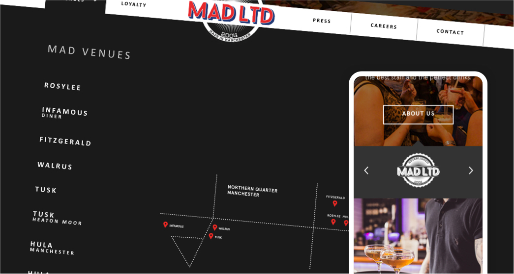
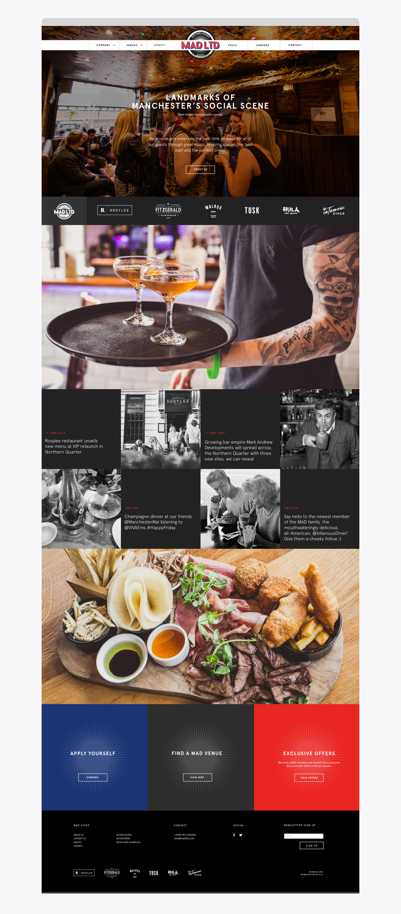
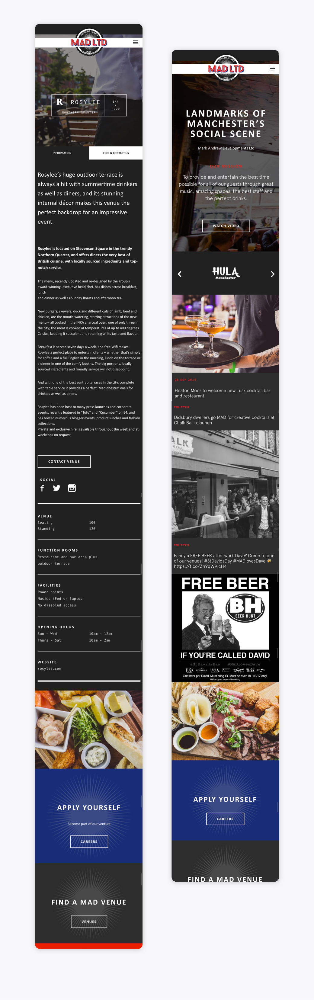
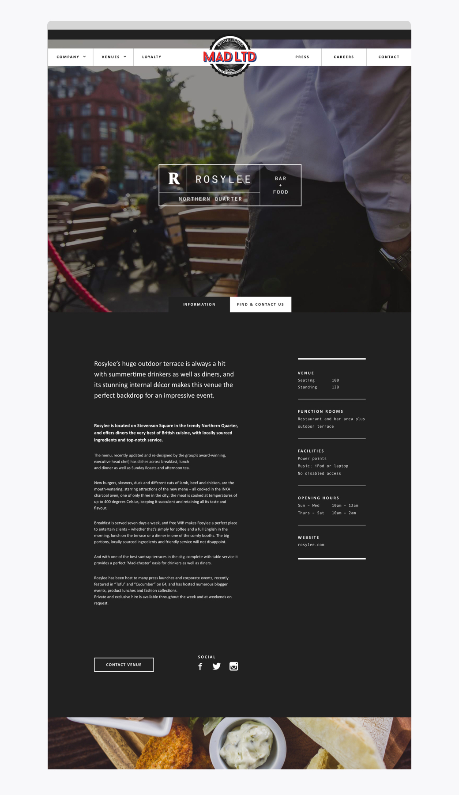

<section>
    <div class="wrapper">
        <div class="grid-full">


<div class="marginbottom--xxxl"></div>
<h1 class="ralph">Mark Andrew Developments</h1>

<div class="marginbottom--m"></div>

<div class="grid-full">
    
</div>
<div class="marginbottom--l"></div>
<div class="col grid-ninety">
    <h3 class="intro">The Problem</h3>
    <p>I was approached by Ahoy Agency (I had worked with Ahoy Agency often in the past) to deliver a website for one of their clients. The brief was to listen to the clients direction, and deliver something that would "wow them". They did not have a brand, so it was from scratch, and it needed to help show off their other restaurants.<br>There was also a need for the website to be a CMS, so we decided upon using WordPress.</p>
</div>

<div class="col grid-ninety">
    <h3 class="intro">The Solution</h3>
    <p>A visually appealing website with huge photography showcasing their amazing restaurants, which was easy to navigate and use. The client was delighted with the final result.</p> 
</div>

<div class="col grid-ninety">
    <h3 class="intro">My Responsibilites</h3>
    <p>Website strategy, prototype, design, regular feedback sessions with client and account manager, design iterations, development (WordPress), email design and build.</p>
    <h3 class="intro">Site Link</h3>
    <p><a href="https://web.archive.org/web/20161105085657/http://www.markandrewdevelopments.com/#">Mark Andrew Developments</a><br><em>(link on wayback machine)</em></p>    
    
    <div class="marginbottom--m"></div>
    
    <div class="marginbottom--m"></div>    


    <div class="marginbottom--m"></div>
    
    <div class="marginbottom--m"></div>
    
</div>
<div class="marginbottom--xl"></div>

<div class="grid-full col">
  <div class="CrossPageNavigation">
    <div class="grid-full">
      <div class="CrossPageNavigationPrevious">
        <strong>Go to the next case study</strong><br />
          <a href="benefitfraud.html">GOV.UK - Report Benefit Fraud</a>
      </div>
    </div>
  </div>
</div>


</div>
</div>
</section>